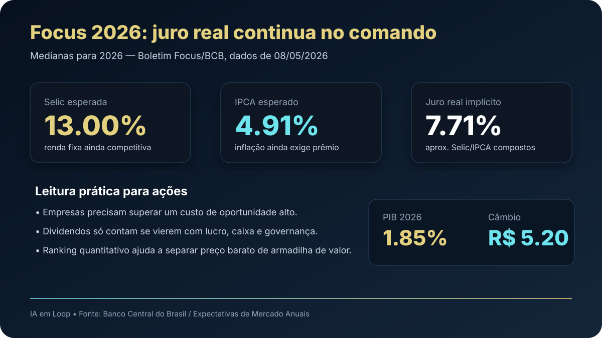

10/05: Selic a 13%, IPCA perto de 5% e o filtro que separa oportunidade de armadilha
A leitura do fim de semana é simples e dura: mesmo com expectativa de queda gradual da Selic, o Brasil continua oferecendo um juro real alto. Isso muda a régua para ações, FIIs, dividendos e qualquer tese que dependa de crescimento futuro.

Dados: Boletim Focus/BCB, mediana para 2026 na consulta de 08/05/2026. Juro real aproximado calculado por capitalização: (1+Selic)/(1+IPCA)-1.
O sinal do dia
O mercado gosta de manchetes sobre “Selic caindo”, mas a pergunta correta para investir é outra: quanto sobra de retorno real depois da inflação? Na última leitura disponível do Focus, a mediana para 2026 indicava Selic em 13.00% e IPCA em 4.91%. A conta composta sugere juro real perto de 7.71%.
Esse número é alto. Ele significa que a renda fixa ainda compete agressivamente contra ações. Para uma empresa valer a pena, não basta parecer barata no múltiplo. Ela precisa oferecer uma combinação de lucro recorrente, caixa, retorno sobre capital, dividendos sustentáveis e margem de segurança.
Leitura IA em Loop: quando o juro real é alto, a bolsa precisa passar por um filtro mais exigente. Preço baixo ajuda, mas qualidade e previsibilidade valem mais.
Por que isso importa para a carteira real
O IA em Loop acompanha duas engrenagens principais: a carteira/ranking de dividendos BESST e a Magic Formula. As duas precisam conversar com o ambiente macro. Se o CDI está forte, o investidor não deve comprar ação apenas porque “caiu”. Deve perguntar se o negócio consegue superar a alternativa segura ao longo do tempo.
Em termos práticos, isso favorece companhias com lucro em caixa, baixa dependência de dívida cara e capacidade de remunerar o acionista sem destruir o balanço. Bancos, seguradoras, energia, petróleo, mineração e infraestrutura podem aparecer bem, mas cada caso precisa ser filtrado por risco específico.
Ranking como antídoto contra narrativa
A narrativa do momento pode mudar rápido: IA, petróleo, guerra, câmbio, eleição, inflação, corte de juros. O ranking quantitativo serve para reduzir improviso. No filtro da Magic Formula acompanhado pelo IA em Loop, por exemplo, aparecem empresas de seguros, construção, saúde, petróleo e mineração entre os destaques por combinação de retorno sobre capital e earnings yield.
| Filtro | O que observar | Por quê |
|---|---|---|
| ROIC/qualidade | Retorno sobre capital acima da média | Ajuda a empresa a atravessar juro alto |
| Earnings yield | Lucro em relação ao preço pago | Compara a ação com CDI/juro real |
| Dividendos | Distribuição recorrente, não episódica | Renda precisa vir de caixa real |
| Dívida | Alavancagem e vencimentos | Juro alto pune balanços frágeis |
Setores mais defendáveis nesse cenário
Seguradoras e bancos
Podem se beneficiar de escala, recorrência e float, mas exigem atenção a inadimplência, provisões e qualidade do crédito.
Petróleo e mineração
Podem proteger contra câmbio e commodities, mas carregam volatilidade, risco político e dependência do ciclo global.
Energia e infraestrutura
Fluxos contratados ajudam, desde que a dívida esteja controlada e os reajustes acompanhem inflação.
Consumo e varejo
Precisam de mais cautela: juro real alto reduz apetite, aumenta custo financeiro e pressiona empresas alavancadas.
Compra, venda ou espera?
Para o investidor do IA em Loop, a leitura de 10/05 não é “comprar bolsa porque a Selic vai cair”. A leitura é: esperar boas empresas aparecerem com preço que vença o juro real. A régua mínima é comparar a tese com um retorno real implícito perto de 7.71%.
Compra faz sentido quando ranking, preço e risco se alinham. Espera é o padrão quando o ativo é bom, mas a margem de segurança é pequena. Venda entra quando a tese depende de crescimento incerto, dívida cara ou dividendos que não cabem no caixa.